介绍
按原图组织说明与下一页入口；空闲 Escape 关闭已验证。
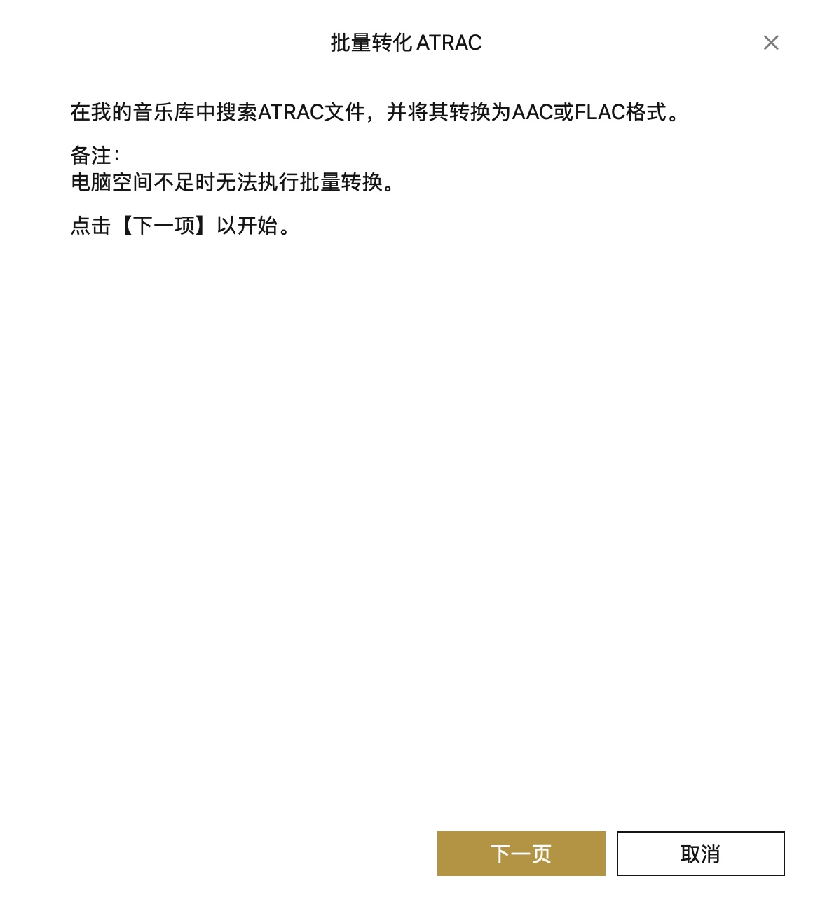
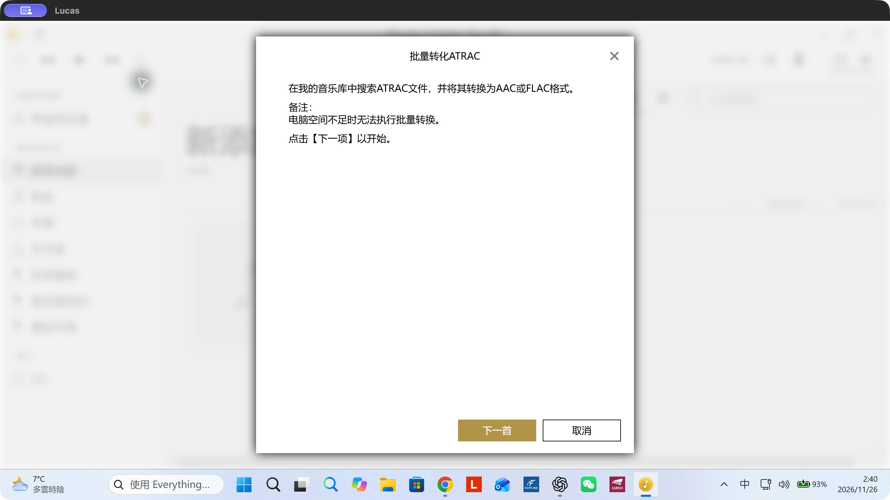
Reference-Windows-2026-11-26-tools/capture/03-atrac/05-entry-with-sample.jpg
17 个实际状态已完成，解码器选择器补验待完成。
左侧为生产视图在隔离 QA 的实际截图，右侧为 Windows 原图的面板区域。点击图片查看完整图片。能力、差异和实际验证说明。
按原图组织说明与下一页入口；空闲 Escape 关闭已验证。


Reference-Windows-2026-11-26-tools/capture/03-atrac/05-entry-with-sample.jpg
格式和原文件操作均未选择，下一页禁用。
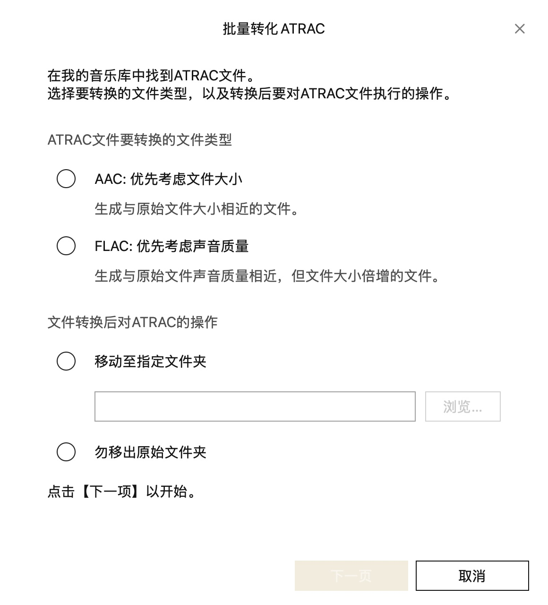

Reference-Windows-2026-11-26-tools/capture/03-atrac/06-files-found-options-empty.jpg
真实选择 AAC，保留原始位置。
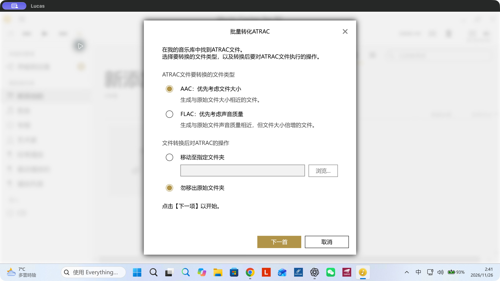
Reference-Windows-2026-11-26-tools/capture/03-atrac/07-aac-keep-original.jpg
显示实际 Mac 卷容量和保守空间估算；Return 不开始。
正在运行真实解码和转换；按完成文件数计数。Windows 参考为 FLAC 进度布局，数据不同。
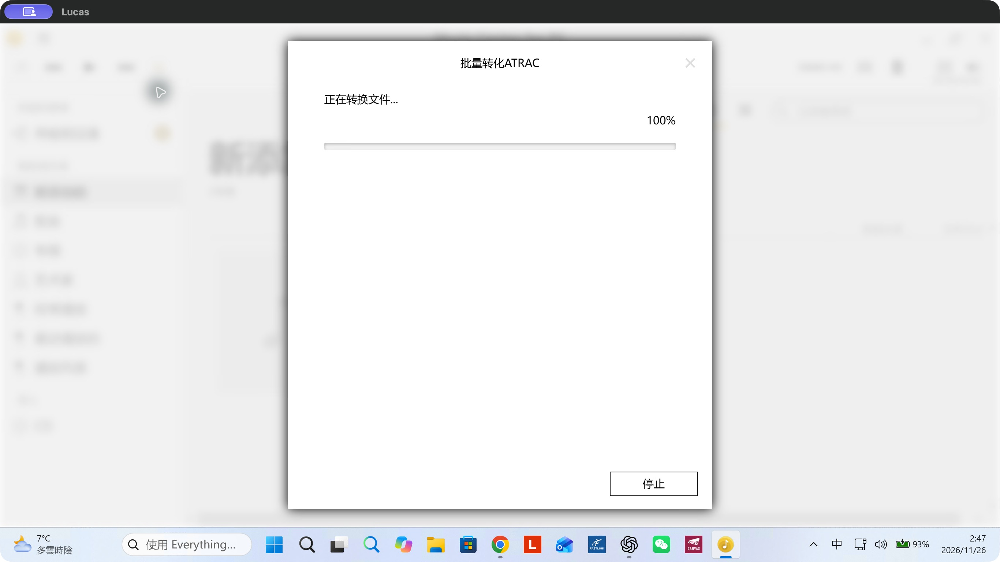
Reference-Windows-2026-11-26-tools/capture/03-atrac/16-flac-progress-100-unfilled.jpg
实际生成 M4A，原曲目路径更新。
已转换的曲目不再计为 ATRAC；原文件仍可保留在磁盘。
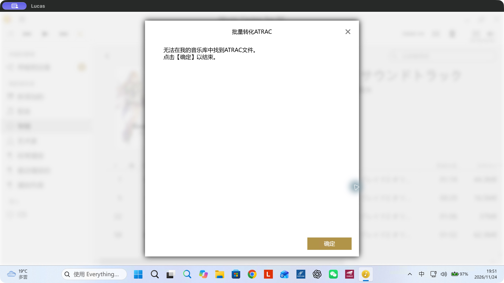
Reference-Windows-2026-11-24/capture/06-dialogs/atrac-scan-result.jpg
移动选项启用浏览，未选目录时下一页禁用。
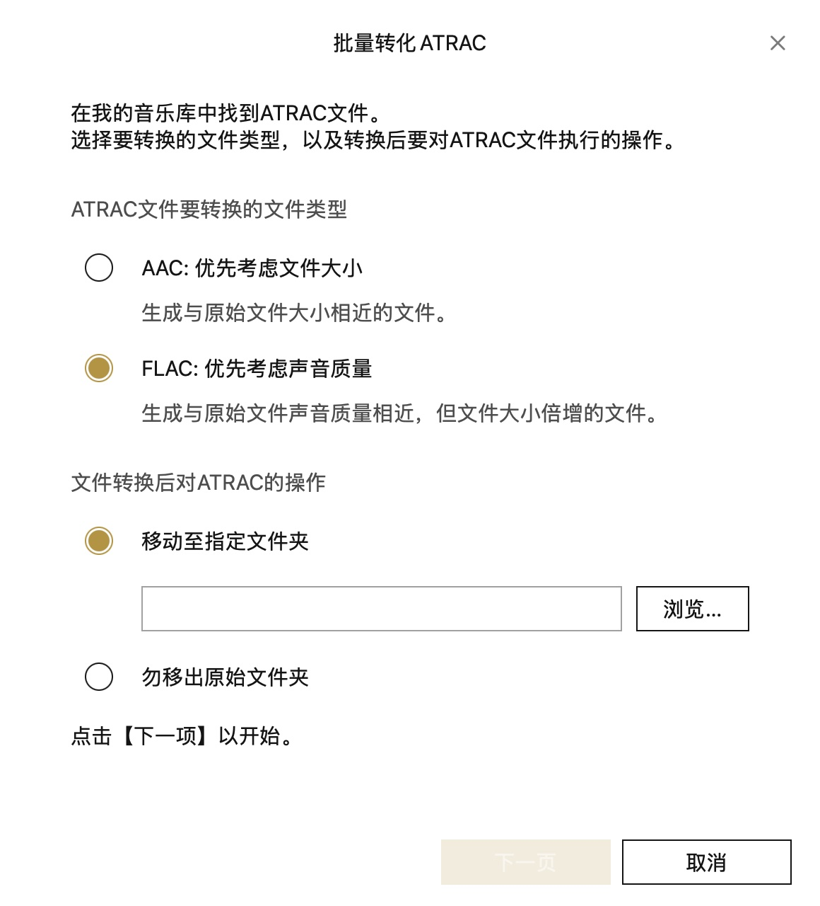

Reference-Windows-2026-11-26-tools/capture/03-atrac/09-move-original-controls-enabled.jpg
选择真实临时目标目录；动态路径与原图不同。
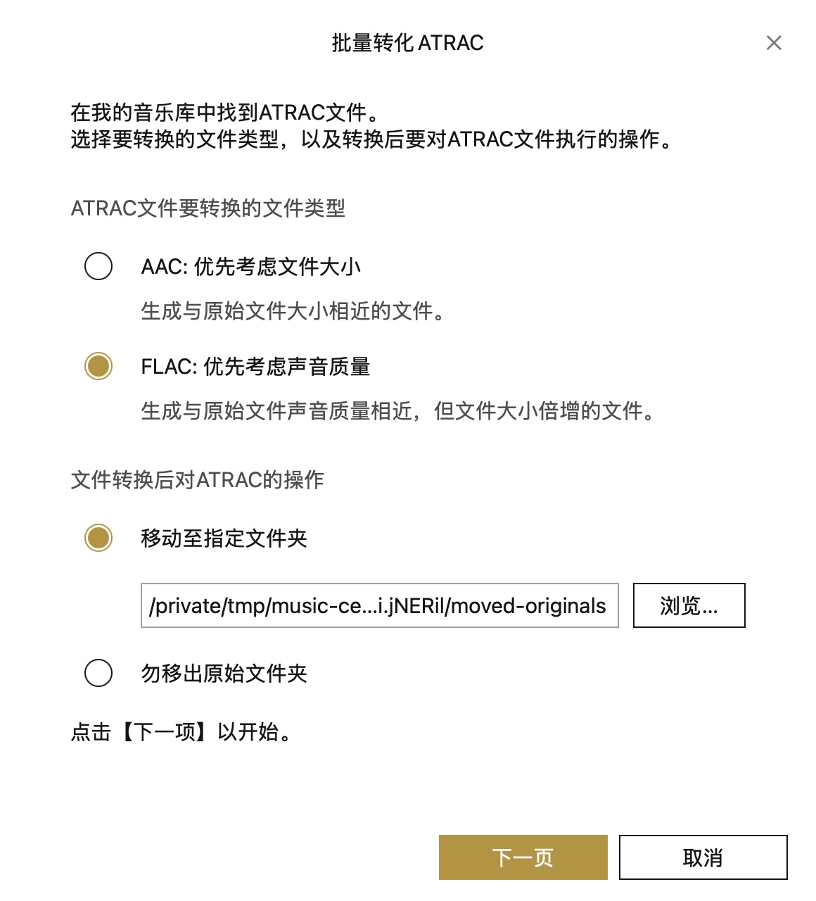
Reference-Windows-2026-11-26-tools/capture/03-atrac/09-move-original-controls-enabled.jpg
真实容量预检，来源和目标空间均计入估算。
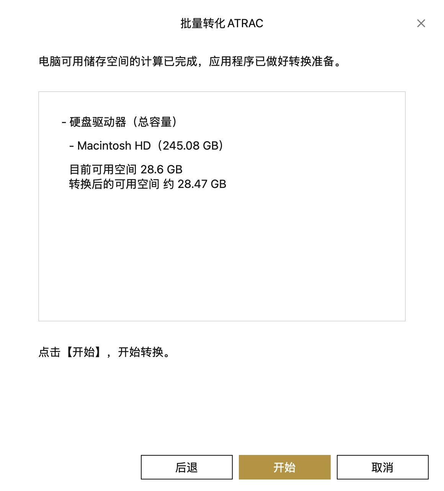

Reference-Windows-2026-11-26-tools/capture/03-atrac/14-flac-ready-to-start.jpg
真实转换任务，不使用原图 100% 数字。
实际输出 FLAC，原文件复制校验并在提交后移出。


Reference-Windows-2026-11-26-tools/capture/03-atrac/15-flac-completed.jpg
按原图选择 FLAC 和勿移出原始文件夹。
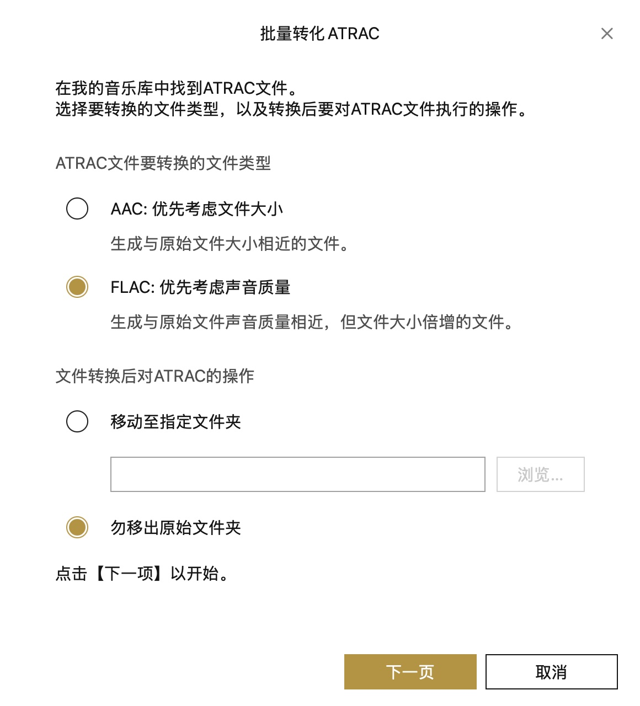
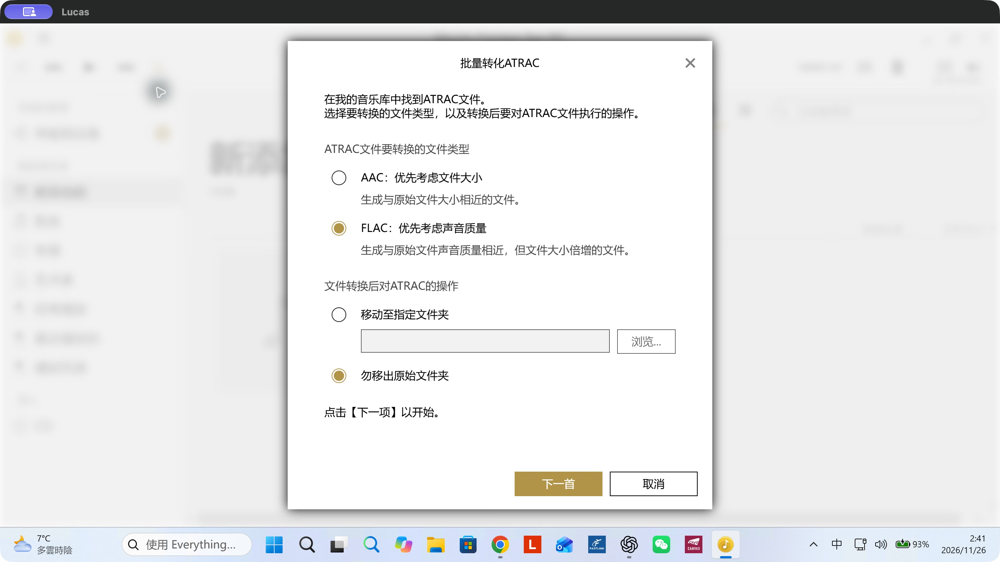
Reference-Windows-2026-11-26-tools/capture/03-atrac/08-flac-keep-original.jpg
停止真实 FFmpeg 进程，未提交输出清理；尚无对应 Windows 停止结果参考。
同批有效源转换成功、无效源解码失败，保留未转换源。
显示真实子进程返回内容；不借用 Windows 导入错误图。
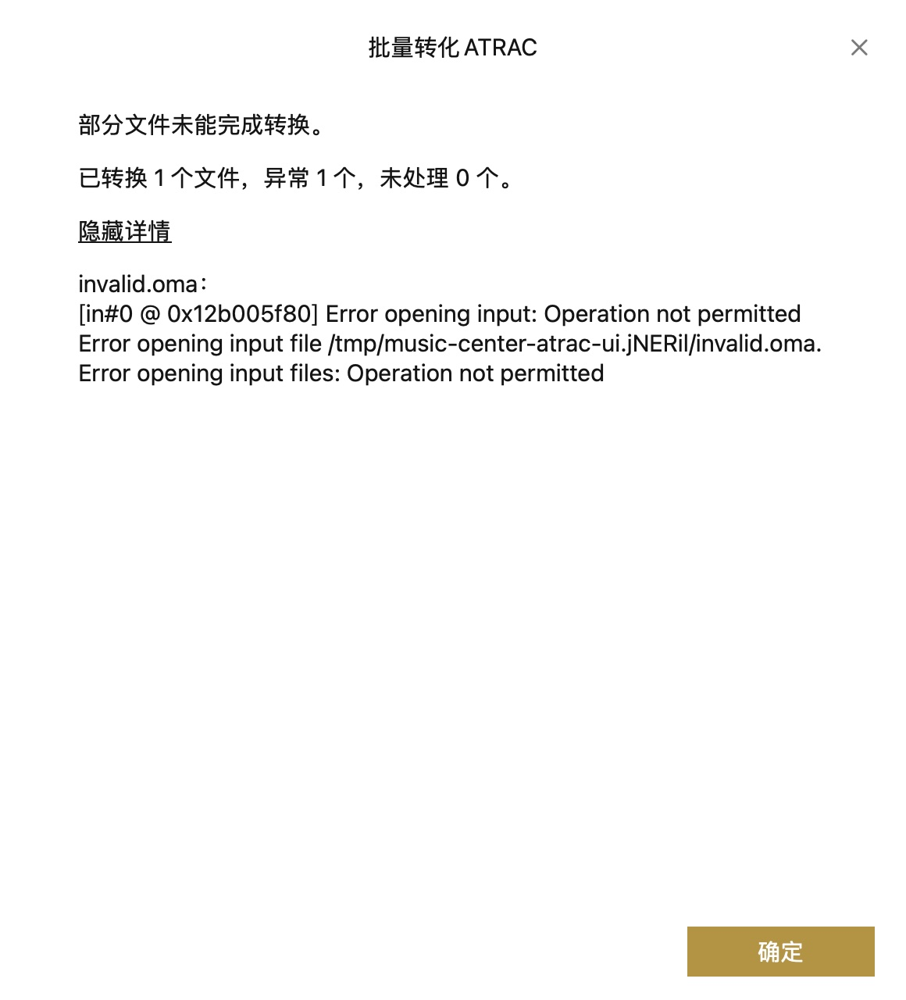
正文滚动，底部按钮固定；原图用于正常布局对照。
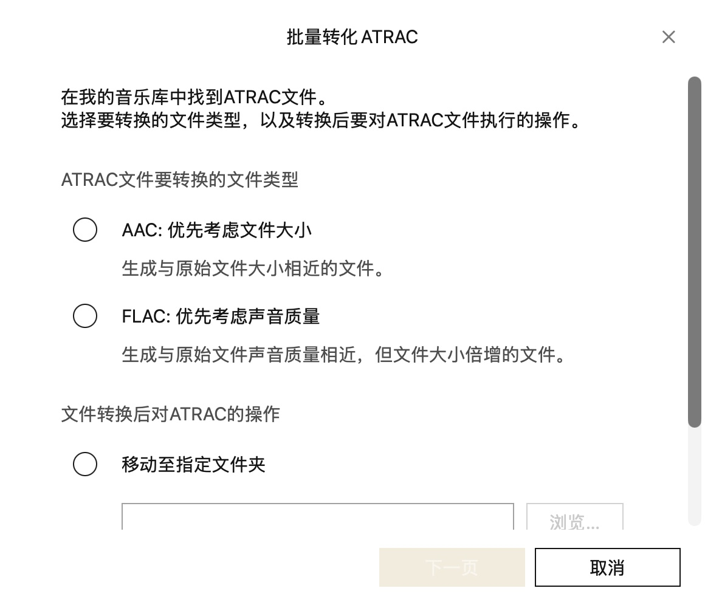
Reference-Windows-2026-11-26-tools/capture/03-atrac/06-files-found-options-empty.jpg